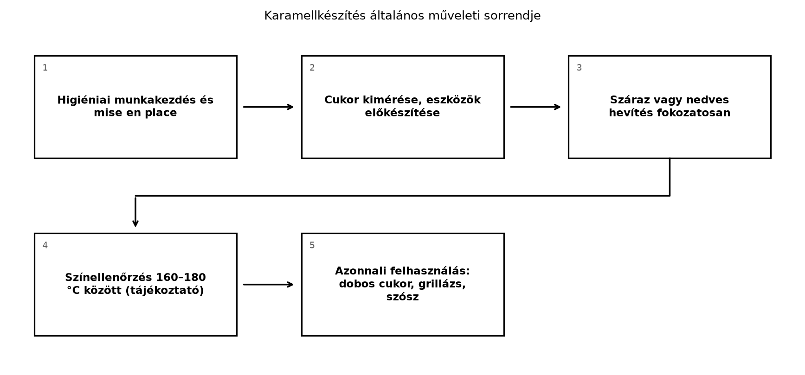
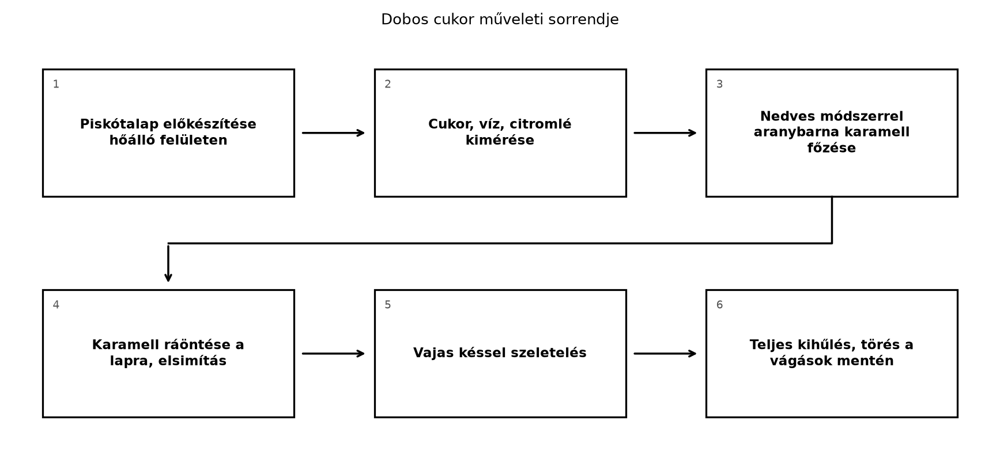

A karamell a cukrászat egyik leglátványosabb, de legbalesetveszélyesebb alapanyaga. Reggelekkel gyakran azzal indul a műhely, hogy valaki karamellt főz a dobos torta tetejéhez vagy grillázst pirít az esküvői bonbonokhoz. Ha a színt eltéveszted, a termék keserű lesz; ha a forró massza a bőrödre fröccsen, súlyos égést szenvedhetsz. Ebben a leckében a karamell biztonságos készítését, a dobos cukrot, a kemény és puha grillázst, valamint a cukorfestéket tanulod meg.
A karamellizáció hőmérséklet- és színfüggő folyamat. Ha csak néhány másodpercet késel, a termék íze és felhasználhatósága megváltozik. A műhelyben ezért mindig kimért adagokkal, tiszta eszközökkel, előre bekészített és hőálló edényekkel dolgozz. A biztonsági ismereteket A cukorkészítés balesetvédelme, higiéniája és hibái alfejezetben mélyítjük tovább.

Definíció. A karamellizáció a cukor hő hatására bekövetkező, nem enzimes barnulási folyamata. A szacharóz 160–180 °C körül olvad, bomlik, és vízvesztés mellett barna színanyagok, karamellvegyületek és jellegzetes aromaanyagok keletkeznek. A folyamat nem tévesztendő össze a Maillard-reakcióval, amelyhez aminosavak vagy fehérjék is kellenek.
Szabály. A karamellizáció foka a szín és az illat alapján ellenőrizhető, de a legmegbízhatóbb a hőmérő és a szín együttes figyelése. A világos borostyán a leggyakoribb cukrászati cél, mert édes, aromás, és még nem keserű. A sötét barna fokozat már kesernyés ízű lehet; az égett fokozatot tilos felhasználni, mert kellemetlen ízt ad és felesleges akrilamid- vagy égéstermék-terhelést jelenthet.
| Színfokozat | Hőmérséklet (°C) | Jellemző | Felhasználás | Megjegyzés |
|---|---|---|---|---|
| Világos aranysárga | 160–170 | világos, enyhe karamellillat | karamellszósz, puha grillázs | ellenőrizendő: gyártói adatlap |
| Aranybarna | 170–180 | erős karamellillat, édeskés | dobos tető, kemény grillázs | |
| Borostyán | 180–190 | mély barna, enyhén kesernyés | cukorfesték | |
| Sötétbarna | 190–200 | kesernyés, kezd égni | korlátozottan, díszítő festés | vigyázni |
| Égett | 200 felett | keserű, füstös, kellemetlen | nem felhasználható | selejt |
A hőmérsékleti értékek tájékoztató jellegűek; a cukor fajtája, a szennyezés, a víztartalom és az edény hővezetése módosíthatja őket. Mindig az adott edényben, az adott tételen végezz próbát.
A színfokozatokat a színskála mutatja; fekete-fehér nyomatban a mezők balról jobbra sötétednek, és a mezőkben a szín neve is olvasható. A HTML-változatban a hőmérséklet-csúszkával (150–210 °C) kiemelheted a fokozatot és a felhasználást; 180 °C felett figyelmeztetést kapsz.
Száraz módszer. A kimért kristálycukrot vékony, egyenletes rétegben, száraz, vastag aljú lábasba szórjuk, és közepes lángon, rázogatva vagy fémkanállal keverve olvasztjuk. Ahogy a cukor olvad, először csomós lesz, majd fokozatosan aranyszínű, folyékony karamellé áll össze. A módszer gyors, de a túlmelegedés veszélye nagyobb, ezért a hőfokot alacsonyan kell tartani, és folyamatosan figyelni kell.
Nedves módszer. A cukrot kevés vízzel (gyakorlati arány: 100 g cukor + 30–40 ml víz) feltesszük, és addig forraljuk, amíg a víz el nem párolog, és a hőmérséklet el nem éri a karamellizáció tartományát. A nedves módszer egyenletesebbé teszi a felolvadást, és csökkenti a leégés kockázatát. A vízhez gyakran adnak kevés citromlevet vagy ecetet (1–2%) a kristályosodás megelőzésére. Ez a módszer lassabb, de jobban szabályozható.
Tilos. A forró karamellt soha ne öntsd műanyag vagy vékony falú, nem hőálló edénybe. A keveréshez csak teljesen száraz, hőálló fém- vagy szilikon eszközt használj, mert a nedves eszköz gőzfröccsenést okozhat.
A karamellszósz a karamell és a tejszín, valamint gyakran vaj találkozása. Az édes karamellt tejzsírral és víztartalmú tejszínnel feloldva folyékony, önthető szószt kapunk. A készítés fő veszélye a forró karamellbe öntött tejszín okozta hirtelen gőzfejlődés és fröccsenés.
Recept. Alap karamellszósz (1 adag, kb. 400–450 g kész szósz):
| Nyersanyag | Mennyiség (g) | Megjegyzés |
|---|---|---|
| Kristálycukor | 200 | száraz módszerrel olvasztva |
| Habtejszín (30–35% zsír) | 250 | melegen hozzáadva |
| Vaj | 50 | a végén, hidegen kockázva |
| Só | 1,5 | kiemeli az ízt |
| Nyers összesen | 501,5 | |
| Kész szósz | kb. 400–450 (kb. 10–20% főzési veszteséggel; tájékoztató, ellenőrizendő mérésével) |
Eljárás számozott lépésekkel:
Figyelem. A tejszín hozzáadásakor mindig számolj a gőz és a forró fröccsenés veszélyével. A lábast ne döntsd magad felé, és ne hagyd felügyelet nélkül.
A helyes és a hibás testhelyzetet az ábra veti össze: helyesen a lábas a tűzről lehúzva, hőálló alátéten áll, a meleg tejszín kinyújtott karral, kis adagokban kerül bele, a keverés hosszú nyelű kanállal történik; hibásan a cukrász föléhajol, egyszerre önti a hideg tejszínt, és a gőz az arcába csap.
A dobos cukor a Dobos torta jellegzetes, fényes karamelltetője. A készítés során a forró karamellt azonnal a piskótalap tetejére öntjük, elsimítjuk, és amíg még meleg, de már nem folyik, vajas késsel előszeleteljük. A vajas kés megakadályozza, hogy a penge beleragadjon a karamellbe, és a karamell a kés vonalánál tisztán eltörik.
Definíció. A dobos cukor olyan vékony karamellréteg, amelyet egy kihűlt (akár előző nap sütött) piskótakorong tetejére öntenek, és a megdermedés előtt, még melegen vajas késsel szeletekre jelölnek. A cukor a lapon megszilárdul, fényes, ropogós tetőt képez.
Technológiai lap. Dobos cukor (1 db 24 cm-es piskótatető, kb. 180–200 g karamell):

A ráöntés, az elsimítás, a bejelölés és a törés kézi mozdulatait a képsor mutatja.
A hagyományőrző Dobos torta eredeti receptúrája cukrászattörténeti forrásokból és a hazai szakmai testületek gyűjteményeiből ismert; az itt megadott arányok tanulási célra szolgálnak, az eredeti arányokat az iskola receptgyűjteménye vagy a kiadói ellenőrzés pontosíthatja (ellenőrizendő).
A grillázs olyan karamellalapú készítmény, amelybe olajos magvakat (mandula, mogyoró, dió, pisztácia, földimogyoró) keverünk. A magok aránya és az esetleges hozzáadott zsiradék dönti el, hogy kemény, törhető, darálható vagy puha, kenhető állagú lesz.
Definíció. A kemény grillázs olyan olvasztott cukorkészítmény, amelyben a karamellizált cukorba kevert olajos magvak aránya nagy, így a kihűlés után a termék kemény, roppanós; darálva vagy törve használják fel desszertekbe, bonbonokba vagy süteményekbe. A puha grillázs vajat vagy tejszínt is tartalmazó, kenhető karamell–olajosmag massza. (A francia praliné, azaz pâte de praliné a karamellizált olajos mag finomra őrölt pasztája.)
Recept. Kemény grillázs (1 kg kész tömegre):
| Nyersanyag | Mennyiség (g) | Arány (%) | Megjegyzés |
|---|---|---|---|
| Előpirított mandula/mogyoró, durvára vágva | 600 | 60 | allergén |
| Kristálycukor | 400 | 40 | száraz vagy nedves módszerrel karamellizálva |
| Összesen | 1000 | 100 |
Eljárás:
Recept. Puha grillázs – kenhető massza:
| Nyersanyag | Mennyiség (g) | Arány (%) | Megjegyzés |
|---|---|---|---|
| Előpirított mogyoró/mandula | 500 | 50 | allergén |
| Kristálycukor | 300 | 30 | |
| Vaj | 200 | 20 | hűtve, kockázva |
| Összesen | 1000 | 100 |
Az eljárás hasonló: a cukrot karamellizáljuk, majd levesszük a tűzről, belekeverjük a meleg magvakat, végül a vajat, és a masszát simára, kenhetőre dolgozzuk. A vaj hozzáadása után a grillázs lágyabb marad, így extrudálható, tölthető vagy csokoládé alá kenhető.
Számítási példa. Grillázs készítésekor gyakori kérdés, mennyi magot tegyünk a karamellhez. Ha a kívánt tömeg , és a mag aránya , akkor:
A cukor tömege:
A karamellizáció során a víz távozik, de a cukor tömege közel állandó. A gyakorlatban 1–2% tömegveszteség előfordulhat, ezért a kimérést enyhén felfelé kerekíthetjük.
Továbbvitt eredmény. Az itt készített kemény grillázs darálva a grillázsbonbonok alapja (Gyümölcs-, marcipán-, nugát- és grillázsbonbonok), a puha grillázs pedig a Fondán, marcipán, nugát és egyéb édesipari félkész termékek és a Sütőmarcipánok, makronok és nugátok alfejezetekben használt masszák rokona. A dobos cukor a Dobos torta elengedhetetlen eleme (Felvert tésztából készült torták; hagyományőrző magyar torták: Dobos és Eszterházy), a vékony karamellrétegek és a grillázsdarabok pedig a díszek alapanyagai (Különleges díszítés: csokoládé-, marcipán-, karamell-, zselatinmassza- és grillázsdíszek).
A cukorfesték sötét, vízzel hígított karamell, amelyet krémek, bevonók, fagylaltok vagy tojáshabok barna színezésére használnak. Az égetett cukor enyhén kesernyés, ezért kis mennyiségben adagolják.
Definíció. A cukorfesték (égetett cukor, karamellszínezék házi változata) olyan sötétbarna folyadék, amelyet kristálycukor karamellizálásával, majd óvatos, forró vizes feloldásával készítenek.
Recept. Cukorfesték (kb. 150 ml):
Az iparban használt karamellszínezékek adalékanyagnak minősülnek (E150 sorozat), és más szabályozás alá esnek; a házi égetett cukor (cukorfesték) hagyományos cukrászati készítmény; hogy a jelölésben összetevőként (pl. égetett cukor) vagy színezékként kell-e feltüntetni, az 1333/2008/EK rendelet karamellre vonatkozó meghatározása alapján ellenőrizendő (NÉBIH-állásfoglalás). A felhasználás során az ízesítő és színező hatást egyaránt figyelembe kell venni.
Higiénia. A karamell és a grillázs készítésekor az edényeknek és a keverőeszközöknek mindig száraznak és tisztának kell lenniük. A magvakkal végzett munka során az allergénkeresztszennyezés kockázata magas; a diófélékkel, földimogyoróval, szezámmal dolgozó eszközöket azonnal el kell mosni, és külön tárolni kell a gluténmentes vagy egyéb allergénmentes termékekétől.
Cél. Elkészíteni egy adag kemény grillázst és egy dobos cukor tetőt, a technológiai lapok szerint, a biztonsági előírások betartásával.
Eszközök és anyagok. Vastag aljú lábas, hőmérő, fémkanál, szilikonlap, piskótalap (24 cm), vajas kés, mérleg, tiszta konyharuha, hosszú ujjú munkaruha, védőkesztyű, arcmaszk (opcionális). Nyersanyagok: kristálycukor, víz, citromlé, előpirított mandula/mogyoró, vaj a késhez.
Higiéniai munkakezdés. Munkaruha, hajháló, ékszer levétele, kézmosás, a munkafelület és az eszközök fertőtlenítése. A magvakat ellenőrizd: avas, penészes vagy szennyezett tételt vissza kell utasítani.
Biztonsági korlát. A forró karamell 160 °C fölötti, súlyos égési sérülést okoz. A gépi aprítást, darálást tanműhelyben, oktatás után és felügyelet mellett végezd; otthon mozsárral, kis adagban dolgozz. A karamellhez vizet önteni mindig a hőforrásról levéve, részletekben, kevergetés közben szabad. Tilos a forró masszába hideg tejszínt vagy vizet hirtelen, egyszerre beleönteni. A kiömlött karamellt hagyd kihűlni, majd langyos vízzel áztasd fel; ne kapard forrón.
Technológiai lap (Dobos cukor). Lásd a fenti technológiai lapot.
Grillázs elkészítése számozott lépésekben:
Ellenőrzési pontok. A karamell színe aranysárga-aranysárgásbarna; a grillázs törésfelülete ropog, a darált állag egyenletes. A dobos tetőn a vágások tiszták, a felület fényes.
Tipikus hibák. Túl sötét, keserű karamell: túlhevítés, a színellenőrzés elmulasztása. Ragadós grillázs: nem elég magas a cukor hőfoka, vagy a massza nedvességet szívott be. Törő, repedő dobos tető: túl vastag karamell, vagy a szeletelés előtt a karamell már teljesen kihűlt.
Takarítás. A karamellt tartalmazó edényeket langyos vízzel áztasd, amíg a cukor feloldódik. A munkafelületet zsíroldó és fertőtlenítő szerrel tisztítsd. A karamellmaradékot a szerves hulladék közé dobd, de csak kihűlés után.
Dokumentálás. A HACCP-naplóba rögzítsd a karamell készítésének hőmérsékletét (ha mérhető), a felhasznált olajos mag tételazonosítóját, az allergénkezelés lépéseit és a késztermék csomagolási időpontját.
A karamell alapú készítményeknél a színt, az ízt, az állagot és a felhasználhatóságot együtt értékeljük. A jó minőségű karamellszósz sima, fényes, önthető, nem szétváló. A dobos cukor fényes, aranysárga, törve ropog, vágási élei tiszták. A kemény grillázs törésfelülete üveges, a magvak egyenletesen oszlanak el. A puha grillázs kenhető, selymes, nem szétváló. Minden esetben ellenőrizni kell a kesernyés íz hiányát és az idegen anyag, héjmaradék vagy szennyeződés jelenlétének kizárását.
Tünet: A karamellszósz szétválik, zsiradék úszik a tetején. Ok: A tejszínt túl hidegen adták hozzá, vagy a keverést abbahagyták, mielőtt az emulzió stabilizálódott. Megelőzés/javítás: A tejszínt 60–70 °C-ra melegítsük, és a vajat a legvégén, fokozatosan, erős keverés közben adjuk hozzá.
Tünet: A grillázs keserű és sötétbarna. Ok: A karamellt túlhevítették, vagy a magvakat a karamellben tovább pirították. Megelőzés: A hőmérőt ne nélkülözd, és az aranybarna szín elérésekor azonnal vedd le a tűzről. A túlégett tételt selejtezni kell.
Tünet: A dobos tető a vágáskor nem törik, hanem ragad és roncsolódik. Ok: A karamell túl alacsony hőfokon van, még folyós, vagy a kést nem vajazták. Megelőzés: Várd meg, amíg a karamell megszilárdul, de még meleg; a kést minden vágás előtt vajazd.
Egy cukrászüzemben esküvői dobos tortát rendelnek péntek reggelre. A tortalapokat előző este megsütötték, a karamelltetőhöz azonban friss cukrot olvasztanak a reggeli műszakban. A cukrász nedves módszerrel készíti a karamellt, hőmérővel ellenőrzi a 175 °C elérését. A forró karamellt a 24 cm-es piskótalapra önti, vajas késsel 16 szeletre jelöli, szobahőmérsékleten teljesen kihűlni hagyja, és csak az expediálás előtt helyezi a hűtött torta tetejére. A később érkező dolgozó a tételt minőségellenőrzés után expediálja. A keresztszennyeződés kockázatát (mogyorós grillázs készült a műhelyben) a vendégtájékoztatóban jelezték (önkéntes tájékoztatás; ellenőrizendő: 1169/2011/EU 36. cikk, NÉBIH-útmutató). Az eset tanulsága: a pontos hőfokmérés és a gyors, vajas késsel történő szeletelés elengedhetetlen a szép dobos tetőhöz; a szándékosan felhasznált allergének jelölése kötelező, a keresztszennyeződést megelőzéssel kell csökkenteni.
Válaszok: lásd a Megoldások szakasz elején.
1. feladat (A). Határozd meg röviden, mi a karamellizáció, és sorolj fel három felhasználási módját a cukrászatban.
2. feladat (A). Számítsd ki, mennyi cukor kell 800 g kemény grillázshoz, ha a mag aránya 55%.
3. feladat (B). Egy karamellszószhoz 300 g cukrot, 375 ml tejszínt és 75 g vajat használnak. A készítés során a tejszínből 20% víz elpárolog. Mennyi lesz a kész szósz tömege, ha a cukor és a vaj tömege változatlan marad?
4. feladat (B). Egy Dobos torta tetejére 200 g cukorból készített karamellt öntenek. A karamellt 16 szeletre kell vágni. Hány gramm karamell jut egy szeletre, ha a veszteség 5%?
5. feladat (C). Egy tanuló a grillázs készítésekor azt tapasztalja, hogy a massza a kihűlés után nem roppanós, hanem puha, rágós lett. Fogalmazz meg két lehetséges okot, és mindegyikre adj javítási javaslatot.
6. feladat (D). Készítsd el a gyakorlati útmutató alapján a kemény grillázst, majd készíts belőle darált grillázst. Tölts ki technológiai lapot, mérd meg a kész tömegét, és értékeld a színt, az illatot, a törésfelületet és az ízt. Írd le, milyen dokumentumokat kell vezetned, ha az üzemben ezt értékesítésre szánják.
Önellenőrzés – válaszok
1. feladat megoldása. A karamellizáció a cukor hő hatására bekövetkező, nem enzimes barnulási folyamata. Felhasználási módok: karamellszósz, dobos cukor tető, grillázs. ∎
2. feladat megoldása. Adott: , . Keresett: . A mag tömege:
A cukor tömege:
Tehát 360 g cukor szükséges. ∎
3. feladat megoldása. Adott: , (a tejszín sűrűsége kb. 1 g/ml, ezért 375 ml ≈ 375 g), , . Keresett: .
A tejszín megmaradó tömege:
A kész szósz tömege:
Az eredmény 675 g. (Megjegyzés: a cukor karamellizációja során kevés víz is távozik, de ezt a feladatban elhanyagoljuk.) ∎
4. feladat megoldása. Adott: , veszteség , szeletszám . Keresett: egy szeletre jutó karamelltömeg, .
A veszteség utáni tömeg:
Egy szeletre:
Tehát kb. 12 g karamell jut egy szeletre. ∎
5. feladat megoldása. Lehetséges okok és javítások: - A karamellt nem melegítették elég magas hőmérsékletre (nem érte el a 160 °C-ot), így a cukor nem karamellizálódott, hanem csak olvadt, és a magvakból kioldódó olajjal együtt lágy maradt. Javítás: hőmérővel ellenőrizve melegítsük 170–180 °C-ra. - A grillázs nedvességet szívott be a hűlés vagy tárolás során, ami meglágyította. Javítás: hűlés után azonnal légmentesen csomagolni, és száraz, hűvös helyen tárolni. ∎
6. feladat megoldása (gyakorlati feladat). A tanulónak el kell készítenie a kemény grillázst a technológiai lap szerint. Az értékelési szempontok: a kész tömeg 1000 g ± 5%; a szín aranybarna, nem sötét; az illat kellemes karamell- és pörköltmag; a törésfelület üveges, roppanós; az íz édes, enyhén pörkölt, nem keserű. Dokumentumok: terméknevet és allergént tartalmazó címke, HACCP-napló bejegyzés a hőkezelésről, a magvak tételazonosítójáról, a késztermék csomagolási időpontjáról. A kész darált grillázst légmentesen, hűvös, száraz helyen kell tárolni a felhasználásig. (A pontozást az oktató a tömeg, a szín, a törés és a dokumentáció alapján végzi.) ∎
A karamell a cukor hőbomlásával, 160–180 °C-on kialakuló barnulási folyamat terméke. Száraz módszerrel a kristálycukrot közvetlenül olvasztjuk, nedves módszerrel víz hozzáadásával, majd a víz elpárologtatásával karamellizálunk. A karamellszószhoz a forró karamellbe meleg tejszínt adagolunk részletekben, mert a hideg tejszín gőzfröccsenést okoz. A dobos cukor a piskótalapra öntött, még melegen vajas késsel szeletelt karamelltető. A kemény grillázs magas olajosmag-aránnyal készül, kihűlés után törhető, darálható; a puha grillázs (praliné) vajjal vagy tejszínnel lágy, kenhető. A cukorfesték sötétre karamellizált cukor forró vizes oldata, krémek és bevonók színezésére. A munkavégzés során a forró karamell égési veszélye, az allergén olajos magvak keresztszennyezése és a gyors, nedvességtől védett csomagolás a legfontosabb. A továbbvitt eredmények: a dobos cukor a Dobos torta tetejéhez (Felvert tésztából készült torták; hagyományőrző magyar torták: Dobos és Eszterházy), a grillázs a grillázsbonbonokhoz (Gyümölcs-, marcipán-, nugát- és grillázsbonbonok) és a díszekhez (Különleges díszítés: csokoládé-, marcipán-, karamell-, zselatinmassza- és grillázsdíszek) kell.
A leckében szereplő hőmérséklet-, idő- és arányadatok tájékoztató jellegűek; a pontos értékeket a gyártói adatlapok, az iskola receptgyűjteménye és a hatályos NÉBIH jó higiéniai gyakorlat útmutatók alapján kell megerősíteni. A karamellizáció hőfokai a szakirodalomban kissé eltérhetnek a cukor fajtájától függően. A hagyományos Dobos-torta tető eredeti arányai cukrászattörténeti forrásból ellenőrizendők. Az adalékanyagként használt karamellszínezékek szabályozása az 1333/2008/EK rendelet alá tartozik; a házi cukorfesték itt bemutatott változata nem adalékanyag, de a kereskedelemben történő felhasználás előtt a jelölési és összetételi kérdéseket tisztázni kell. Az allergénekre vonatkozó tájékoztatási kötelezettség az 1169/2011/EU rendelet II. melléklete szerint ellenőrizendő. A munkavédelmi követelményeknél a munkavédelmi törvény és a NÉBIH útmutatói az irányadók, a konkrét védőeszköz-előírásokat mindig a helyi kockázatértékelés dönti el.